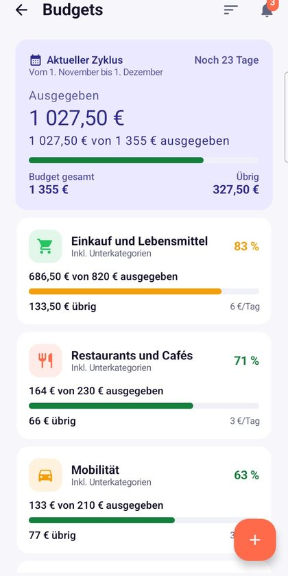
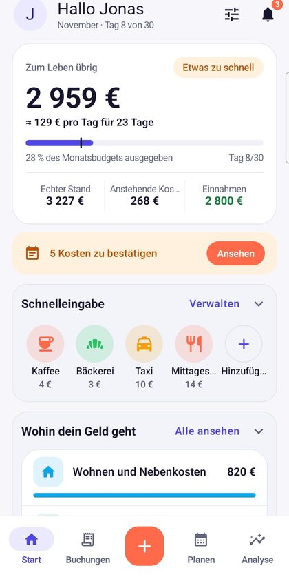
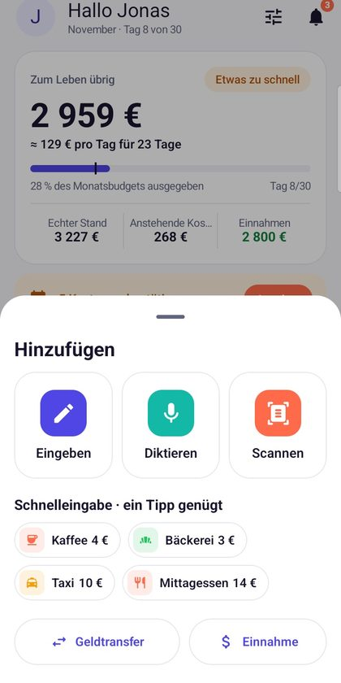
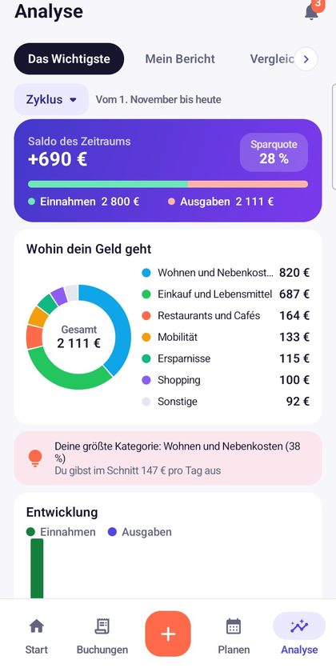

Das Budget, das deinem Gehalt folgt.
Walletz zeigt, was dir bis zum nächsten Zahltag bleibt, bestätigt deine Fixkosten mit einem Tipp und erfasst Ausgaben in Sekunden: per Sprache, Foto oder Tastatur.
Bei Google Play ladenFunktionen entdecken- Kein Konto nötig
- Dunkelmodus
- 6 Sprachen
- Google-Drive-Sicherung


Alles, was du für den Monat brauchst
Für alle, die jeden Euro, Dirham oder Dollar zählen: klar, schnell, ohne Bankenjargon.
Dein echter Spielraum
Dein Zyklus beginnt, wenn das Gehalt eintrifft, nicht am 1. Walletz zeigt, was nach den Fixkosten bleibt, und dein Tagesbudget.
Erfassen in 3 Sekunden
Sag „12 Euro Kaffee bar“ oder fotografiere den Beleg: Der Betrag wird auf deinem Handy gelesen. Oder tippe einfach.
Deine Konten, dein Stil
Bank, Bargeld, Sparen: Wähle Farbe und Logo für jedes Konto und füge Kategorien Fotos hinzu. Alles ist auf einen Blick erkennbar.
Fixkosten, Schulden und Sparrunden
Miete, Raten, Abos, Tontine: Erinnerungen vor der Fälligkeit, Bestätigung mit einem Tipp und Überblick über den Rest.
Budgets, Ziele, Einkauf
Lege pro Kategorie ein Limit fest, nähere dich deinen Sparzielen und plane deine Einkaufsliste mit Preisen.
Google-Drive-Sicherung
Optional: eine Kopie deiner Daten im privaten App-Bereich deines eigenen Drive, damit beim Handywechsel nichts verloren geht.
Ein klares Budget auf den ersten Blick


In drei Minuten startklar
Gehalt und Zahltag eingeben
Walletz startet deinen Zyklus zur richtigen Zeit und legt Kategorien in deiner Sprache an.
Konten und Fixkosten hinzufügen
Bank, Bargeld, Miete, Abos: einmal eintragen, dann ist alles geplant.
Ausgaben laufend erfassen
Per Sprache, Foto oder Tastatur. Dein Spielraum aktualisiert sich von selbst.
Deine Daten bleiben bei dir
Kein Walletz-Konto, kein Server: Deine Buchungen werden auf deinem Handy gespeichert. Wenn du die Google-Drive-Sicherung aktivierst, geht die Kopie in den privaten App-Bereich deines eigenen Kontos, den wir nicht lesen können. Walletz ist dank dezenter Werbung kostenlos, die du mit Treuepunkten entfernen kannst.
Fragen?
Schau in die Hilfe oder schreib an learntique@gmail.com. Antwort innerhalb von 48 Arbeitsstunden.